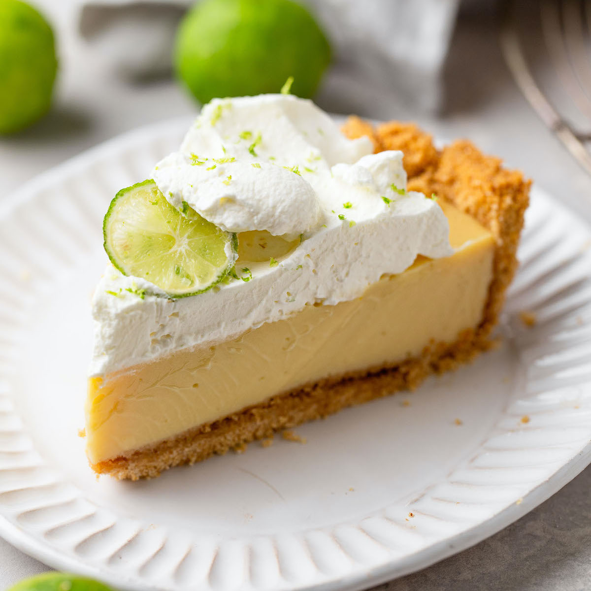

Key Lime Pie

Danielle for Live Well Bake Often.
Key lime pie is an American dessert made from limes, egg yolks and sweetened condensed milk. It
may be served with no topping, topped with a meringue topping made from egg whites or with whipped cream;
it may be cooked in a pie crust, graham cracker crust, or no crust. The dish is named after the small Key limes,
which are more aromatic than the common Persian limes, and which have yellow, not green, juice. The filling in a
Key lime pie is also yellow, largely because of the egg yolks.
Key lime pie is probably derived from the "Magic Lemon Cream Pie" published in a promotional brochure by Borden,
a producer of condensed milk, in 1931. The recipe is attributed to Borden's fictional spokesperson, Jane Ellison.
According to the pastry chef Stella Parks, users of the recipe altered it with local ingredients; she describes it as
"a stunning reminder of how deeply America's traditions are shaped by advertising".
Ingredients
Filling and crust
- 1½ cups of graham cracker crumbs (about 8 or 9 whole graham crackers)
- 5 tablespoons of unsalted butter, melted
- ⅓ cup of granulated sugar
- 1 cup of key lime juice
- 2 cans of sweetened condensed milk
- 5 large egg yolks
Whipped Cream
- 1½ cups of cold heavy cream
- 2 of tablespoons of granulated sugar
- 1 of teaspoon vanilla extract
Preparation
-
Heat the oven to 180 degrees. Make the crust: Combine the graham cracker crumbs and
sugar in a mixing bowl and mix until well combined. Add the melted butter and stir until fully combined and all
of the crumbs are moistened. Transfer to a 15 centimeters pie plate. Using your fingers or a
flat-bottomed cup, press the mixture into the pie plate and up the sides. Make sure it is well packed. Bake until
set, 12 to 15 minutes. Let cool at room temperature for 30 minutes, or cover with plastic wrap and refrigerate up
to 2 days.
-
To make the key lime pie filling: Combine the key lime juice, sweetened condensed milk, and egg yolks in
a large mixing bowl and whisk until fully combined. Pour the filling into the slightly cooled graham cracker crust and spread
it around into one even layer. Bake for 18 to 22 minutes or until the top of the pie is set, the pie will still be jiggly.
Remove from the oven and transfer to a wire rack to cool for 2 hours.
-
Make the whipped cream: Using a handheld mixer or stand mixer fitted with a whisk attachment, whip the heavy
cream, sugar and vanilla extract, on medium-high speed until firm peaks form, 1 to 2 minutes. Top the pie with the
whipped cream. Transfer to the refrigerator to chill for at least 6 hours or overnight.
-
To serve, sprinkle the pie with lemon shavings, if desired. Store leftover pie in the refrigerator, covered,
for up to 5 days. The whipped cream may lose some height, but the pie will be no less delicious.
Homepage